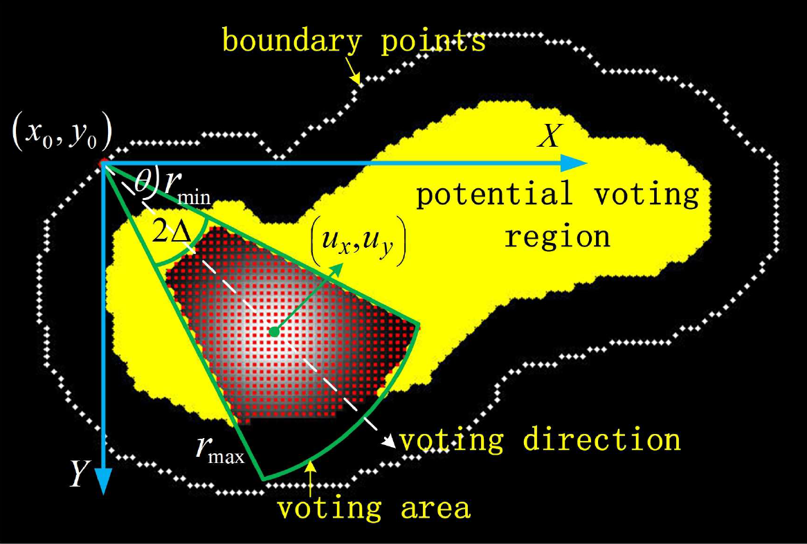
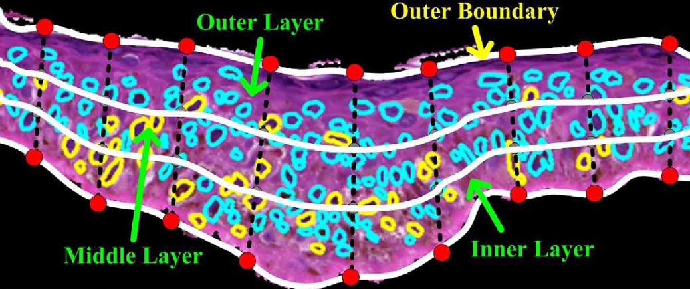
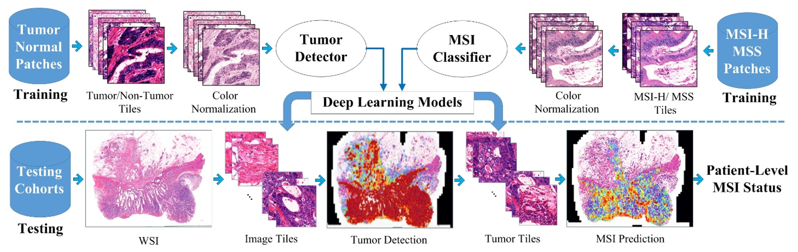
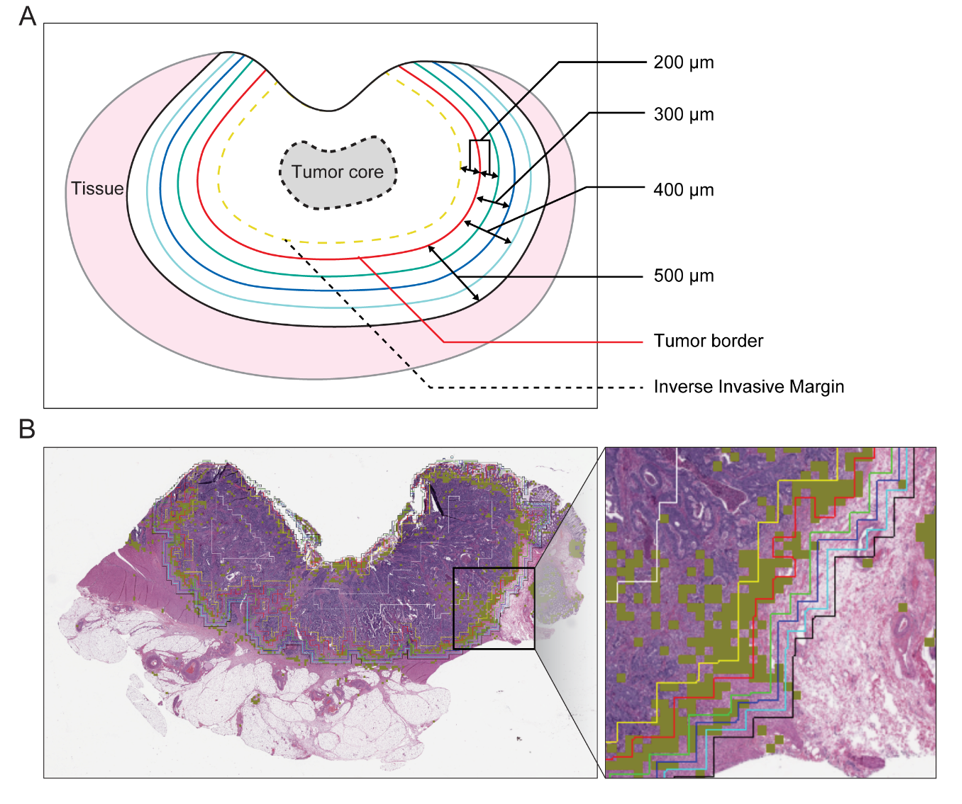

AI-guided Medical Image Analysis: Computational Histopathology & Computational Radiology

|
Weakly-supervised learning for WSI classifications Hongming Xu, Qi Xu, Fengyu Cong, Jeonghyun Kang, Chu Han, Zaiyi Liu, Anant Madabhushi and Cheng Lu IEEE Reviews in Biomedical Engineering (RBME), vol. x, no. x, pp. xx, 2023 |
|  |
Object Detection in Digital Pathology and Microscopy Images Hongming Xu, Cheng Lu, Mrinal Mandal IEEE Journal of Biomedical and Health Informatics, vol. 18, no. 5, pp. 1729-1741, 2014 Hongming Xu, Cheng Lu, Richard Berendt, Naresh Jha, Mrinal Mandal IEEE Journal of Biomedical and Health Informatics, vol. 21, no. 3, pp. 826-837, 2017 Hongming Xu, Cheng Lu, Richard Berendt, Naresh Jha, Mrinal Mandal IEEE Transactions on Biomedical Engineering, vol. 64, no. 10, pp. 2475-2485, 2017 |
| | |
|  |
Classification and Cancer Grading in Digital Pathology Hongming Xu, Cheng Lu, Richard Berendt, Naresh Jha, Mrinal Mandala Computerized Medical Imaging and Graphics, vol. 66, pp. 124-134, 2018 Hongming Xu, Richard Berendt, Naresh Jha, Mrinal Mandala Micron, vol. 9351, pp. 383-390, 2015 Hongming Xu, Sunho Park, Tae Hyun Hwang IEEE/ACM Transactions on Computational Biology and Bioinformatics , accepted in Sep. 2019 |
| | |
|  |
Genome Biomarker Prediction for Cancer Patient Prognosis Analysis Isaiah Pressman*, Hongming Xu*, Yoonjin Cha, Sung Hak Lee, Jeonghyun Kang and Tae Hyun Hwang Under-Preparation, 2020 Hongming Xu, Sunho Park, Jean Ren\'e Clemenceau, Jinhwan Choi, Sung Hak Lee and Tae Hyun Hwang Journal of Pathology Informatics, accepted in May 2022 |
| | |
|  |
Tumor-infiltrating Lymphocytes (TILs) Analysis for Cancer Patient Prognosis Hongming Xu*, Yoon Jin Cha*, Jean R. Clemenceau, Jinhwan Choi, Sung Hak Lee, Jeonghyun Kang, and Tae Hyun Hwang Journal of Pathology: Clinical Research accepted in March 2022 |
| |